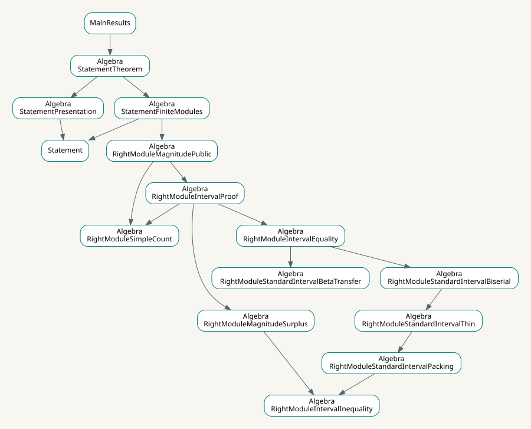

1. Hom and mesh matrices
Almost-split sequences supply an inverse for the Hom-dimension matrix and a combinatorial formula for magnitude.
Matrix and numerical interfaceMathematical navigation
The proof studies the difference between magnitude and the simple count. Finite graded intervals connect directed deletion to the general theorem.
Almost-split sequences supply an inverse for the Hom-dimension matrix and a combinatorial formula for magnitude.
Matrix and numerical interfaceFinite kernels bound the primitive-factor boundaries. Direct heights and generated relations realize the associated poset spaces.
Poset realizationThe intrinsic excess and Ext compensation control deletion. The equality argument uses commutative squares and a simultaneous basis for two filtrations.
Directed surplusEvery graded indecomposable is a unique shift of a standard representative. Finite interval algebras have a uniform surplus estimate, which proves the lower bound.
Interval inequalitySeparated interval packing forces zero surplus and thinness. The control interval is biserial, and supported almost-split maps transfer its nonprojective middle-summand bound.
One-sided transferThe beta characterization gives special biseriality. The proved socle/string converse and Morita reduction complete the unchanged public statement.
Full proofMagnitudeConjecture.MainResults provides the theorem, direct simple count and independent statement. The root MagnitudeConjecture also imports supporting results. Public and expanded axiom audits check both levels.
Arrows point from a module to a module it imports. The graph is generated from source; other dependencies are omitted.

The revised manuscript frozen on September 21 has five main sections and Appendix A. The correspondence maps these passages and their numbered statements to Lean, including the direct structural proofs in the appendix, and explains the last-map formulation of almost-split transfer.